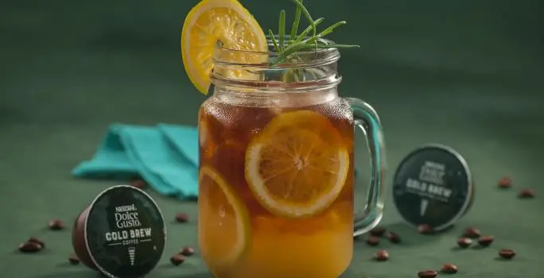

Cold Brew com Suco de Laranja

Ingredientes:
- 100ml de café cold brew
- 100ml de suco de laranja natural
- Gelo a gosto
- 1 fatia de laranja para decorar
Modo de Preparo:
1. Encha um copo com gelo.
2. Adicione o suco de laranja e o cold brew.
3. Misture levemente e decore com a fatia de laranja.
Voltar